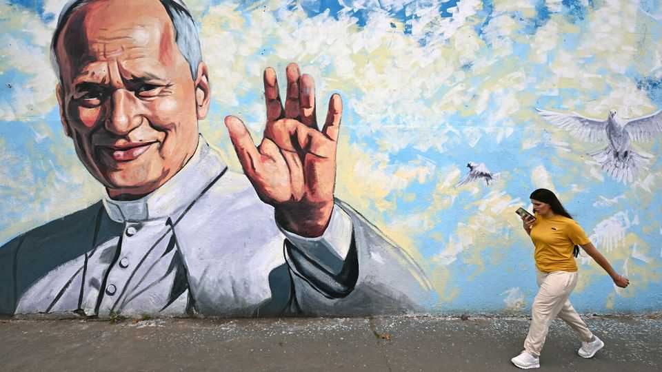
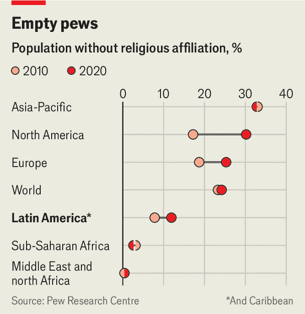

Can the pope’s tour of Latin America win back disenchanted youth?
Feminism and mysticism are providing reasons to question the faith

Nov 5th 2026
Pope Leo’s tour of South America, beginning on November 6th, is a marathon. Over 12 days he is traveling some 31,000km, visiting Uruguay, Argentina and Peru and giving around 40 speeches. In some ways it is a homecoming: the pontiff spent two decades as a missionary in Peru. The roadshow, coming three weeks after the pope underwent surgery for lung cancer, will draw big crowds. A bigger question is whether it can help win back Latin America’s waning faithful. The region’s educated young, in particular, are gradually going off organised religion.
In the decade to 2020 the share of people around the world who say they do not identify with any organised religion—call them the “nones”—grew by a percentage point, to 24%. This shift may appear small, but behind it lies much change. Every religion other than Islam stagnated or shrank over that period, when taking population growth into account. The share of people who say they have no religious affiliation declined slightly in Asia and barely budged in Africa or the Middle East. But it soared in Europe and the Americas. And of the three countries where the share of “nones” grew the most, two (Chile and Uruguay) are in Latin America.

To see what this looks like on the ground, trek to Uruguay—the country in which Pope Leo is beginning his grand tour. Its constitution has long enforced an exceptionally strict division between church and state. Easter week, known as “Holy Week” in the rest of Latin America, is called “Tourism Week”. Christmas is dubbed “Family Day.” Not by chance, Uruguay legalised marijuana, gay marriage and abortion much earlier than its peers.
The share of Uruguayans who identify as Catholic has fallen by almost half since 1995, to 33%. Only 9% of Uruguayans say they practise the faith regularly. Many young people are unenthused by the pope’s visit, the first since 1988. “I just think: what a waste of money,” says Lucía Castillos, a 31-year-old caterer in Montevideo, the capital. “How much are we spending on this visit that we could be giving to people who have nothing to eat?”
Ms Castillos says her scepticism towards the church grew during a recent upswell of feminism all across Latin America. What began as mass rallies in Argentina in 2015 protesting against killings of women later swept into Chile and Mexico, where demonstrators also demanded access to abortion. “Catholicism springs from the premise that women are inherently flawed,” she believes. “That vision just doesn’t square with feminism.”
Some of Latin America’s new “nones” are unapologetic atheists. “To me, it all seems crazy,” says Virginia, a 29-year-old primary school teacher in Buenos Aires, the capital of Argentina: “A dove impregnating a virgin, evangelical Christians speaking in tongues, Orthodox Jews dressed in wigs.” But the evidence suggests that many of these people are in fact swapping organised religion for a much looser kind of spiritualism.
Many of them tell pollsters they believe in esoteric things, such as “energies”. Syncretism and folksy superstition is common. Some Brazilian “nones” dabble in Candomblé and Umbanda, two traditions that combine Roman Catholicism with west African religious practices. Mexicans of all stripes celebrate the Day of the Dead, a Mesoamerican spin on All Souls’ Day. Argentina’s president, Javier Milei, embodies this growing spiritual mish-mash. The libertarian has a strong interest in Judaism but has not denied rumours that he has also sought a medium’s help to speak to his dead dog.
Organised religion remains a powerful influence on the region’s politics, even if its grip on hearts is loosening. Recent years have seen increasingly vocal interventions in many countries by evangelical Protestant groups, and politicians are putting in much more effort to court them. Evangelicals were firm supporters of Jair Bolsonaro, Brazil’s president from 2019-23, and of his son Flávio who recently failed in his bid to win the same job.
The godless in Latin America remain more likely than those elsewhere to say that organised religion helps society, rather than harms it. The Catholic church is still the most trusted institution in Latin America, according to Latinobarómetro, a polling organisation, well ahead of outfits such as armies and the media. That reflects a history of (mostly) do-gooding, as well as the dim view many Latin Americans take of their secular institutions, such as legislatures and the courts. The result is that the pope’s words and actions on the road will be scoured for political subtext.
Some in Argentina hope that Leo’s four-day stop there could squeeze a touch more humility from Mr Milei—who is broadly succeeding in stabilising an economy in crisis but can be aggressively unsympathetic towards people affected by his policies. Before becoming president in 2023 Mr Milei had lambasted Leo’s predecessor, Francis. He called the late pontiff, who was Argentine, an “imbecile” and “the representative of the devil on earth,” though he later apologised. Pope Leo plans to visit a centre for disabled children. Argentine bishops have repeatedly expressed concern about the impact of Mr Milei’s cuts on the poor and sick.
The pope’s last stop, in Peru, ought to be much more straightforward. It remains one of the most devout countries in the region. And many Peruvians have warm memories of his years working in the country. Even in a rapidly secularising region, good deeds are infallibly popular. ■